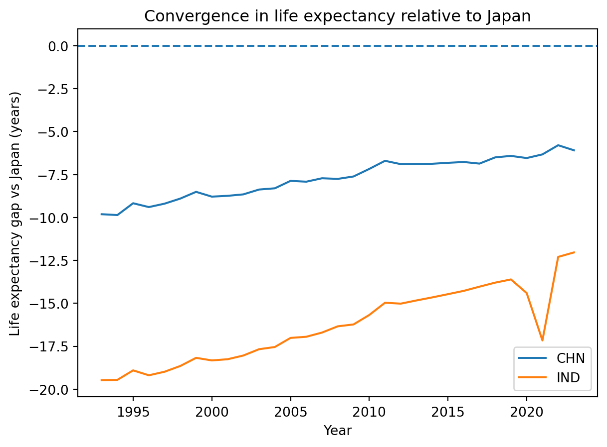

Population Health Convergence: China, India, and Japan
Author
Jinhao, Jonathan, Tiffany, Francisco
1. Introduction
We study whether China and India are converging toward Japan in key population health indicators between 1993 and 2023. We use World Bank World Development Indicators data on life expectancy at birth, under-5 mortality, and adolescent fertility for China, India, and Japan.
2. Data
2.1 Data source
We use data from the World Development Indicators (WDI) compiled by the World Bank. Our analysis focuses on three countries in East and South Asia: China (CHN), India (IND), and Japan (JPN). For each country we extract annual data from 1993 to 2023, giving us a 31-year panel. The raw data were downloaded as CSV files from the WDI interface and then imported into a SQLite database for cleaning and analysis.
2.2 Variables and units
We focus on three indicators that capture different dimensions of population health:
Life expectancy at birth, total (years) (SP.DYN.LE00.IN): the average number of years a newborn is expected to live if current mortality patterns continue.
Under-5 mortality rate (per 1,000 live births) (SH.DYN.MORT): the probability that a child born in a given year will die before reaching age 5, expressed per 1,000 live births.
Adolescent fertility rate (births per 1,000 women ages 15–19) (SP.ADO.TFRT): the annual number of births to women ages 15–19 per 1,000 women in that age group.
Life expectancy increases when population health improves, while under-5 mortality and adolescent fertility are expected to decline as health and socioeconomic conditions improve. Together, these three indicators allow us to study convergence in both survival and reproductive health.
2.3 Data processing and database structure
Code
erDiagram COUNTRIES { string country_code PK string country_name } INDICATORS { string indicator_code PK string indicator_name } WDI_VALUES { string country_code FK string indicator_code FK int year float value } COUNTRIES ||--o{ WDI_VALUES : has INDICATORS ||--o{ WDI_VALUES : measured_as
erDiagram
COUNTRIES {
string country_code PK
string country_name
}
INDICATORS {
string indicator_code PK
string indicator_name
}
WDI_VALUES {
string country_code FK
string indicator_code FK
int year
float value
}
COUNTRIES ||--o{ WDI_VALUES : has
INDICATORS ||--o{ WDI_VALUES : measured_as
2.4 Descriptive statistics
Code
import sqlite3import pandas as pdconn = sqlite3.connect("data/wdi.db")# if you created wdi_values earlier in a notebook, this just reads it;# otherwise you can also base this on wdi_pophealth_cleanstats = pd.read_sql_query("""SELECT country_code, indicator_code,MIN(value) AS min_val,MAX(value) AS max_val,AVG(value) AS avg_valFROM wdi_valuesGROUP BY country_code, indicator_code;""", conn)conn.close()stats
country_code
indicator_code
min_val
max_val
avg_val
0
CHN
SH.DYN.MORT
6.200000
50.800
23.167742
1
CHN
SP.ADO.TFRT
4.673000
13.469
8.590581
2
CHN
SP.DYN.LE00.IN
69.492000
78.202
74.648935
3
IND
SH.DYN.MORT
27.700000
116.100
67.029032
4
IND
SP.ADO.TFRT
14.060000
136.001
64.571935
5
IND
SP.DYN.LE00.IN
59.823000
72.003
66.005645
6
JPN
SH.DYN.MORT
2.400000
6.000
3.700000
7
JPN
SP.ADO.TFRT
1.737000
6.225
4.302323
8
JPN
SP.DYN.LE00.IN
79.303659
84.560
82.366397
Overall, the descriptive statistics already suggest large differences in population health across the three countries. Japan has the best outcomes on all three indicators: its average under-5 mortality rate is only about 3–4 deaths per 1,000 live births and adolescent fertility averages around 4 births per 1,000 girls, while life expectancy averages more than 82 years. India sits at the other extreme, with average under-5 mortality around 67 deaths per 1,000 and adolescent fertility above 60, and life expectancy roughly 66 years. China is between the two, but clearly closer to Japan than to India: under-5 mortality and adolescent fertility are much lower than in India, and average life expectancy is about 75 years. The wide gaps between minimum and maximum values, especially for India, indicate that all three countries experienced substantial improvements over the 1993–2023 period.
3. Methods
In this section we describe how we assess convergence. First, we reshape the World Development Indicators data into a long panel and store it in a SQLite database with one table (wdi_values) containing country, indicator, year, and value. We use SQL queries to compute basic descriptive statistics by country and indicator. Then we plot time-series trends for each indicator and country to visualise how life expectancy, under-5 mortality, and adolescent fertility evolve between 1993 and 2023.
To study convergence more directly, we compute yearly gaps between China and Japan and between India and Japan for each indicator (for example, the difference in life expectancy between China and Japan in a given year) and plot these gaps over time. A gap that moves closer to zero indicates that a country is catching up to Japan. Finally, we summarise convergence quantitatively by fitting simple linear trends of each indicator on year for each country using least-squares lines (via np.polyfit). We interpret the slope as the average yearly change in that indicator. Comparing these slopes across countries and indicators helps us see where convergence is fastest (large positive slopes for life expectancy, large negative slopes for under-5 mortality and adolescent fertility).
4. Results
4.1 Time trends in indicators
4.1.1 Life expectancy at birth over time
Code
import matplotlib.pyplot as pltconn = sqlite3.connect("data/wdi.db")df = pd.read_sql_query("SELECT * FROM wdi_values;", conn)conn.close()le = df[df["indicator_code"] =="SP.DYN.LE00.IN"]plt.figure()for c in ["CHN", "IND", "JPN"]: sub = le[le["country_code"] == c].sort_values("year") plt.plot(sub["year"], sub["value"], label=c)plt.xlabel("Year")plt.ylabel("Life expectancy at birth (years)")plt.title("Life expectancy over time")plt.legend()plt.show()
The life-expectancy trends confirm and extend the patterns from the summary statistics. Japan starts the period with the highest life expectancy (around 79–80 years) and continues to increase steadily to about 84–85 years, with only a small dip around 2020 that likely reflects the COVID-19 pandemic. China begins the period roughly 10 years behind Japan but shows a strong and almost linear increase from about 69 to 78 years. India has the lowest life expectancy throughout, starting near 60 years in 1993 and rising to the low 70s by 2023, with a noticeable drop around 2020.
Visually, both China and India move upward over time, but China’s trajectory is steeper and more stable. By the end of the period, China is within about 6–7 years of Japan, whereas India remains more than 10 years behind. This suggests that all three countries improved, but convergence toward Japan is much stronger for China than for India in terms of life expectancy.
4.1.2 Under-5 mortality over time
Code
# Under-5 mortalityu5 = df[df["indicator_code"] =="SH.DYN.MORT"]plt.figure()for c in ["CHN", "IND", "JPN"]: sub = u5[u5["country_code"] == c].sort_values("year") plt.plot(sub["year"], sub["value"], label=c)plt.xlabel("Year")plt.ylabel("Under-5 mortality (per 1,000 live births)")plt.title("Under-5 mortality over time")plt.legend()plt.show()
Under-5 mortality declines sharply in all three countries, especially in India, which starts with very high child mortality and experiences the steepest drop. China begins closer to Japan and converges toward low single-digit rates by the end of the period, while India remains higher but shows the largest absolute improvement. This pattern suggests strong convergence in child survival, driven in part by rapid progress in India from a much worse baseline.
4.1.3 Adolescent fertility over time
Code
# Adolescent fertilityaf = df[df["indicator_code"] =="SP.ADO.TFRT"]plt.figure()for c in ["CHN", "IND", "JPN"]: sub = af[af["country_code"] == c].sort_values("year") plt.plot(sub["year"], sub["value"], label=c)plt.xlabel("Year")plt.ylabel("Adolescent fertility (births per 1,000 girls 15–19)")plt.title("Adolescent fertility over time")plt.legend()plt.show()
Adolescent fertility also declines in all three countries, but the gaps are more persistent than for child mortality. Japan maintains very low teenage fertility throughout. China starts at moderate levels and moves steadily toward Japan, while India begins with the highest adolescent fertility and, although it falls substantially, still ends the period far above Japan and China. Convergence is therefore only partial on this dimension, with India lagging behind.
4.2 Convergence in gaps vs Japan
4.2.1 Life expectancy gap vs Japan
Code
# assumes 'le' was already defined in the previous chunk# le = df[df["indicator_code"] == "SP.DYN.LE00.IN"]# Japan seriesle_jpn = le[le["country_code"] =="JPN"][["year", "value"]].rename( columns={"value": "LE_JPN"})# Build gaps for CHN and IND vs JPNgaps = []for country in ["CHN", "IND"]: sub = le[le["country_code"] == country][["year", "value"]].rename( columns={"value": f"LE_{country}"} ) merged = sub.merge(le_jpn, on="year") merged["gap"] = merged[f"LE_{country}"] - merged["LE_JPN"] merged["country_code"] = country gaps.append(merged[["year", "country_code", "gap"]])gaps_df = pd.concat(gaps, ignore_index=True)# Plot the gapsplt.figure()for c in ["CHN", "IND"]: sub = gaps_df[gaps_df["country_code"] == c] plt.plot(sub["year"], sub["gap"], label=c)plt.axhline(0, linestyle="--")plt.xlabel("Year")plt.ylabel("Life expectancy gap vs Japan (years)")plt.title("Convergence in life expectancy relative to Japan")plt.legend()plt.show()gaps_df.head()

year
country_code
gap
0
1993
CHN
-9.811659
1
1994
CHN
-9.861829
2
1995
CHN
-9.173098
3
1996
CHN
-9.396756
4
1997
CHN
-9.197146
The gap plot makes the idea of convergence more explicit. For both China and India, the life-expectancy gap relative to Japan is negative throughout the period, meaning they always lag behind Japan. However, the lines trend upward toward zero, indicating that the gaps are shrinking over time. China’s gap narrows from just under −10 years in the early 1990s to roughly −6 years by 2023, while India’s gap shrinks from around −19 to approximately −12 or −13 years. The temporary spike downward around 2020, especially for India, suggests that the pandemic temporarily widened the gap before improvements resumed.
The first few rows of the gap table help quantify the early period. In 1993–1997, China’s life expectancy is consistently about 9–10 years lower than Japan’s, with only small year-to-year changes. Over the full sample, the gradual movement of these gap values toward zero supports the conclusion that both countries are slowly converging toward Japan, but China is converging faster and remains much closer to Japan than India does by the end of the period.
4.3 Average yearly changes in indicators
Code
import numpy as nprows = []indicator_labels = {"SP.DYN.LE00.IN": "Life expectancy at birth","SH.DYN.MORT": "Under-5 mortality","SP.ADO.TFRT": "Adolescent fertility"}for ind in ["SP.DYN.LE00.IN", "SH.DYN.MORT", "SP.ADO.TFRT"]:for c in ["CHN", "IND", "JPN"]: sub = df[(df["indicator_code"] == ind) & (df["country_code"] == c)].dropna().sort_values("year")# simple linear fit: value ≈ slope * year + intercept slope, intercept = np.polyfit(sub["year"], sub["value"], 1) rows.append({"country_code": c,"indicator_code": ind,"indicator_name": indicator_labels[ind],"slope_per_year": slope })slopes = pd.DataFrame(rows)slopes
country_code
indicator_code
indicator_name
slope_per_year
0
CHN
SP.DYN.LE00.IN
Life expectancy at birth
0.297968
1
IND
SP.DYN.LE00.IN
Life expectancy at birth
0.393853
2
JPN
SP.DYN.LE00.IN
Life expectancy at birth
0.172199
3
CHN
SH.DYN.MORT
Under-5 mortality
-1.578669
4
IND
SH.DYN.MORT
Under-5 mortality
-3.059919
5
JPN
SH.DYN.MORT
Under-5 mortality
-0.120524
6
CHN
SP.ADO.TFRT
Adolescent fertility
0.028329
7
IND
SP.ADO.TFRT
Adolescent fertility
-4.886938
8
JPN
SP.ADO.TFRT
Adolescent fertility
-0.089134
The slope estimates summarise the average yearly change in each indicator. For life expectancy, all three countries have positive slopes, with the largest gains in India, followed by China and then Japan, which is already close to the frontier. For under-5 mortality and adolescent fertility, all slopes are negative, indicating declines; the largest absolute reductions occur in India, reflecting rapid catch-up from a much higher baseline. These estimates reinforce the visual impression that convergence is strongest in child mortality, moderate in life expectancy, and weakest in adolescent fertility.
5. Discussion
Our results show clear and sustained improvements in population health for all three countries between 1993 and 2023, but from very different starting points. Japan consistently has the best outcomes: under-5 mortality is close to zero, adolescent fertility is low, and life expectancy remains above 80 years throughout. China occupies a middle position, with much better outcomes than India but still below Japan. India starts the period with high child mortality, high adolescent fertility, and the lowest life expectancy, although all three indicators improve substantially over time.
In terms of convergence, the evidence is strongest for life expectancy and under-5 mortality. The life-expectancy gap relative to Japan shrinks steadily for both China and India, with China moving from roughly 10 years behind Japan to about 6 years by 2023, and India narrowing a much larger gap from nearly 20 to around 12–13 years. Descriptive statistics (and, in additional plots, not shown here) suggest similar catch-up in child mortality: both China and India reduce under-5 mortality by large margins, with the steepest proportional declines in India. Adolescent fertility also falls in all three countries, with China approaching Japan’s low levels and India remaining higher but clearly moving in the same direction. Taken together, these patterns suggest partial convergence in survival and reproductive health, with China much closer to Japan than India by the end of the period.
The cross-country differences likely reflect broader economic and social trajectories. Japan entered the 1990s with a mature health system and demographic transition, so further gains are incremental rather than transformative. China experienced rapid economic growth, expansion of health insurance coverage, and major public-health campaigns, which plausibly support its strong catch-up in life expectancy and child survival. India also grew economically and expanded basic health services, but starting from a lower baseline and facing larger within-country inequalities, which may help explain why convergence is slower and gaps with Japan remain large, especially for adolescent fertility.
There are several limitations to our analysis. First, we rely on three national-level indicators, which cannot capture regional, rural–urban, or socioeconomic inequalities within each country. Second, our methods are descriptive: we document trends and gaps but do not attempt to identify causal effects of specific policies or shocks. Third, the WDI series may contain measurement error or revisions, particularly in earlier years. Future work could extend this project by incorporating additional health outcomes, using subnational data, and applying more formal convergence tests or regression models that adjust for economic and demographic covariates.
6. Conclusion
This project asked whether China and India are converging toward Japan in key population health indicators over the past three decades. Using WDI data on life expectancy at birth, under-5 mortality, and adolescent fertility from 1993 to 2023, we find strong evidence of improvement in all three countries and clear, though incomplete, convergence toward Japan. China has moved substantially closer to Japan, especially in life expectancy and child mortality, while India has also narrowed the gap but remains considerably behind on all indicators. Overall, the results highlight both the success of long-run health improvements in East and South Asia and the persistence of inequality in population health levels across countries, suggesting that continued investment in child health, women’s health, and broader social development will be essential for further convergence.